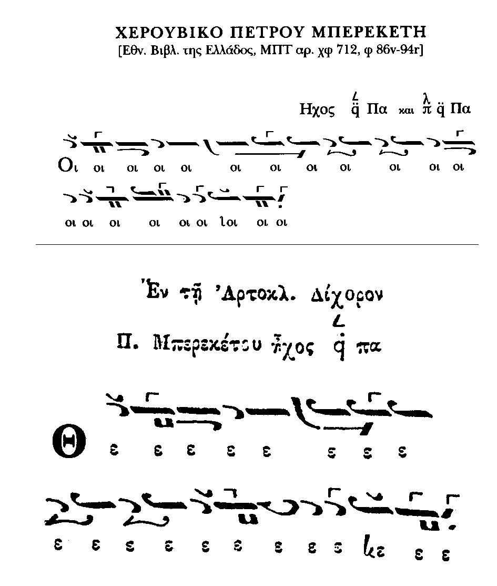
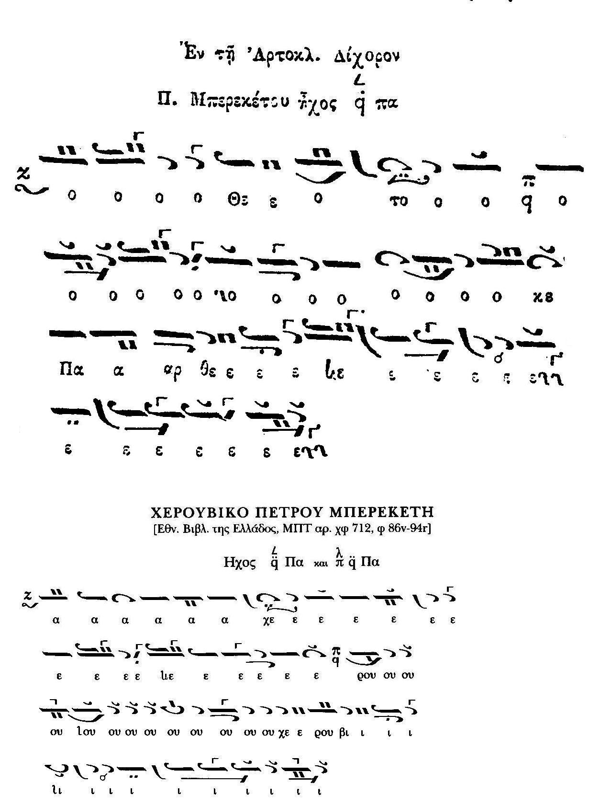
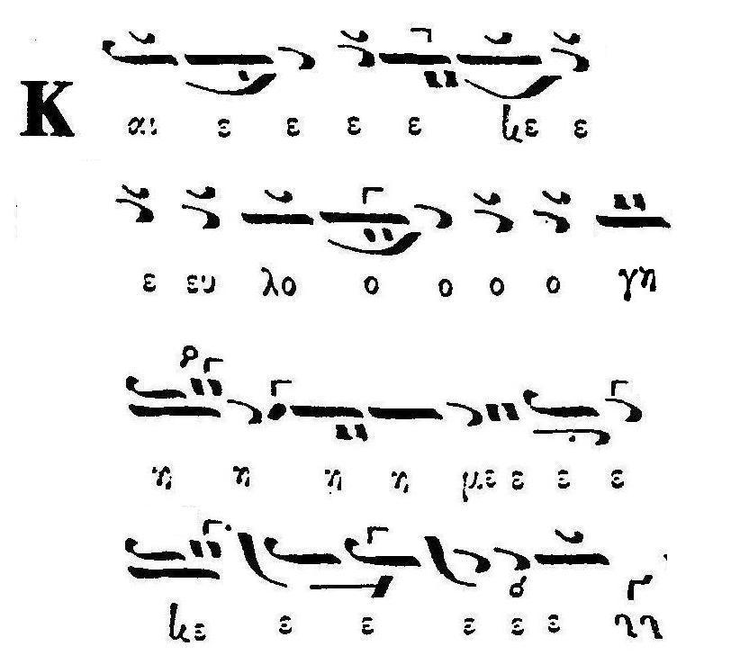

The cheroubikon (as well as the Sunday koinonikon) by Petros Bereketis is unique in the sense that it is written one and the same way in the old method, but can be chanted in all eight modes. In this page we compare the theseis (or excerpts) of the first mode version and their interpretations by well-known psaltai to the Theotoke Parthene by the same composer.
The cheroubikon and the Theotoke Parthene were transcribed by both Gregorios and Chourmouzios. For the cheroubikon we use the score by Chourmouzios from the ms EBE-MPT 712 published by Manolis Xatzigiakoumis in his Mnimeia series together with the recording by Dimitrios Nerantzis (buy it here). For the Theotoke Parthene we use the classical score from the Pandekti (Gregorios' transcription). See also the separate page dedicated to the Theotoke Parthene.
First excerpt
Both the cheroubikon and the Theotoke Parthene start with a similar phrase
(click to enlarge)

{kind=link}
The interpretation of Theotoke Parthene excerpt
K. Pringos (mp3, 1950s)S. Tsolakidis (mp3, 1970s)
Th. Stanitsas (wma, 1980)
Choir of Athonite fathers (mp3, 1990s)
L. Sfikas (wma, 1980s?)
G. Michalakis (mp3, 2005)
Now compare this to the excerpt from the cheroubikon
D. Nerantzis (wma, 2001)Konstantinos Protopsaltis' slow cheroubikon in the first mode also starts with a (shorter) similar phrase, listen to
L. Asteris (mp3, 2005)
Second excerpt
Another similar phrase.
(click to enlarge)

{kind=link}
There is an "intersection" with the opening of "Kai eulogemenos" as well (Plagal First Mode)

{kind=link}